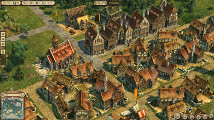
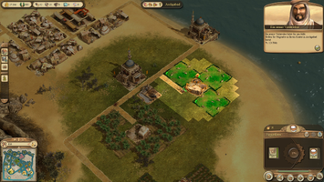

Anno 1404
Dieser Artikel wurde für die folgenden Ubuntu-Versionen getestet:
Ubuntu 16.04 Xenial Xerus
Ubuntu 14.04 Trusty Tahr
Zum Verständnis dieses Artikels sind folgende Seiten hilfreich:
Anno 1404  ist ein 3D-Strategiespiel aus dem Jahre 2009. Das Spiel ist der vierte Teil der Anno-Serie, deren erster Teil Anno 1602 war. Spielinhalt ist, in einer fremden Welt neue Inseln zu besiedeln und eine Zivilisation zu erschaffen.
ist ein 3D-Strategiespiel aus dem Jahre 2009. Das Spiel ist der vierte Teil der Anno-Serie, deren erster Teil Anno 1602 war. Spielinhalt ist, in einer fremden Welt neue Inseln zu besiedeln und eine Zivilisation zu erschaffen.
"Die Szenerie des Spiels bilden Okzident und Orient im 15. Jahrhundert. Die auffälligste Neuerung bei Anno 1404 im Vergleich zu seinen Vorgängern ist, dass man mit der Besiedelung des Okzidents und des Orients zwei Völker mit jeweils eigenen Gebäuden und Bedürfnissen aufbaut. Dabei entsteht eine Abhängigkeit voneinander, denn die produzierten Waren des einen Volkes werden vom anderen zur weiteren Entwicklung gebraucht." (Quelle: Wikipedia)
|  |
| Spielszene aus dem "Okzident" |
|  |
| Spielszene aus dem "Orient" |
Installation¶
Das Spiel kann als Kauf-DVD oder als Download erworben werden. Für das Spielen wird Wine[1] ab Version 1.6.2 benötigt. Zur Installation muss die auf der DVD befindliche Datei setup.exe mit Wine ausgeführt werden:
wine /media/BENUTZERNAME/ANNO\ 1404\ PC/setup.exe
Nun folgt den Anweisungen des Installationssassistenten. Im Anschluss muss dann noch eine Anpassung im Spielverzeichnis vorgenommen werden.
DirectX-Einstellungen anpassen¶
Vor dem ersten Start muss im Spielverzeichnis ~/.wine/drive_c/Program Files (x86)/Ubisoft/Related Designs/ANNO 1404 die Datei Engine.ini mit einem Editor[2] wie folgt angepasst werden, damit das Spiel statt mit DirectX 10 mit DirectX 9 läuft.
<DirectXVersion>9</DirectXVersion>
Sollte die Datei nicht existieren, muss man sie erstellen und mit folgendem Inhalt füllen:
<InitFile>
<QualityLevel>1</QualityLevel>
<DirectXVersion>9</DirectXVersion>
</InitFile>Sebstverständlich muss dafür DirectX 9 mittels winetricks installiert werden.
winetricks directx9
Benutzung¶
Das Spiel kann z.B. in Unity einfach über die Dash durch die Eingabe von "Anno 1404" gestartet werden[3].
Ist das Spiel erfolgreich gestartet worden, befindet man sich im Hauptmenü. Hier gibt es nun die Möglichkeit, ein Endlosspiel mit selbst einstellbaren Vorgaben (die Kampagne des Spiels) zu absolvieren, oder vorgefertigte Szenarien zu spielen, die unterschiedliche Schwierigkeitsgrade aufweisen. Überdies ist es möglich, Szenarien, die von anderen Spielern erstellt wurden, zu spielen.
Als letzte Option bleibt noch das im Spiel sogenannte "Tor zur Welt" Modus. Dabei handelt es sich um den Mehrspieler-Modus.
Problembehebung¶
Zum ersten Starten werden Administrator-Rechte benötigt¶
Um dieses Problem zu beheben, das beim ersten Start auftreten kann, muss das Spiel öfter gestartet werden. Bei jedem Start des Spiels wird ein Fenster geöffnet, das nach Aktualisierungen sucht, nach den ersten zwei Aktualisierungen startet das Spiel dann ohne Probleme. Es ist allerdings ratsam, die zwei weiteren auch noch zu installieren.
Bei Linksklicks wird manchmal ein Doppelklick ausgeführt¶
Im Laufe des Spiels kommt es immer wieder vor, das ein einfacher Linksklick als Doppelklick ausgeführt wird. Das Problem scheint sich zu häufen, je weiter der Spielverlauf fortgeschritten ist (d.h. je größer die Zivilisation, je aufwändiger die Grafik). Eine wirkliche Lösung für das Problem ist derzeit nicht bekannt (Stand: Januar 2015), das Problem lässt sich allerdings bessern, wenn man die Grafikeinstellungen niedriger wählt.
Fehler bei Authentifikation des Online-Profils¶
Mit Wine-Version 1.6.2-0ubuntu14.2 kam es mitunter zu Problemen bei der Authentifikation / Herunterladen des Online-Profils. Hier kann zB auf die neueste stabile Verion ausgewichen werden, siehe Wine-Installation mittels PPA


 Übersichtsartikel
Übersichtsartikel- Erstellt mit Inyoka
-
 2004 – 2017 ubuntuusers.de • Einige Rechte vorbehalten
2004 – 2017 ubuntuusers.de • Einige Rechte vorbehalten
Lizenz • Kontakt • Datenschutz • Impressum • Serverstatus -
Serverhousing gespendet von